Sagan neyi öngörmüştü?
Gökbilimci Carl Sagan, ölümünden bir yıl önce, 1995'te Karanlık Bir Dünyada Bilimin Mum Işığı (The Demon-Haunted World: Science as a Candle in the Dark) adlı kitabını yayımladı. Kitabın hemen başlarında, torunlarının devralacağı ülkenin karanlık bir portresini çizmişti:
"Çocuklarımın ya da torunlarımın zamanındaki Amerika'ya dair içimde kötü bir his var: Birleşik Devletler'in bir hizmet ve bilgi ekonomisine dönüştüğü; imalat sanayisinin neredeyse tamamının başka ülkelere kaydığı; müthiş teknolojik güçlerin bir avuç insanın elinde toplandığı ve kamu yararını temsil eden hiç kimsenin meseleleri kavrayabilecek durumda bile olmadığı; halkın kendi gündemini belirleme ya da otoriteyi bilgiyle sorgulama yetisini yitirdiği; kristallerimize sarılıp burç yorumlarımıza tedirgin gözlerle bakarken, eleştirel yetilerimiz körelmiş, hoşumuza gideni doğru olandan ayıramaz halde, neredeyse farkına bile varmadan yeniden batıl inançlara ve karanlığa kaydığımız bir Amerika...
Amerika'nın aptallaşması en açık biçimde, son derece etkili medyada özlü içeriğin yavaş yavaş çürümesinde görülüyor: 30 saniyelik konuşma kesitlerinde (şimdi 10 saniyeye, hatta altına indi), en düşük ortak paydaya göre yapılan programlarda, sözde bilimin ve batıl inançların safça sunuluşunda, ama hepsinden çok, cehaletin bir tür kutsanmasında."
Aradan otuz yıl geçti, Sagan'ın torunları büyüdü. Pasaj da birkaç ayda bir viral oluyor; onu paylaşan milyonlar, bir avuç trilyon dolarlık şirketin kurduğu akışlarda on saniyelik videolar arasında geziniyor. Mecranın kendisi kanıtın parçası oldu.
Ama bir metnin tanıdık gelmesi, haklı olduğunu kanıtlamaz. Sagan'ın pasajı işler, güç, medya, inanç ve bilişsel yetiler hakkında sınanabilir iddialardan oluşuyor. Otuz yıllık veriyle artık bu iddialara not verebiliriz.
Kısa cevap: Sagan fabrikalar ve gücün yoğunlaşması konusunda haklıydı. Medya konusunda da haklıydı ama erken konuşmuştu. Batıl inanç konusunda büyük ölçüde haklı çıktı; yalnız batıl inanç artık burçlarla değil, akışlarla yayılıyor. Asıl suçlamasında, yani eleştirel yetilerin gerilediği iddiasında, kitabı yazdıktan sonraki on yedi yıl boyunca yanıldı; 2012'den beri ise giderek daha haklı çıkıyor. Üstelik gerileme herkese eşit dağılmıyor. Ortaya bir kum saati çıkıyor: Becerileri en yüksek Amerikalılar yerini koruyor ya da ilerliyor, en düşük olanlar hızla geriliyor, orta kesim de inceliyor. Okuduğunu tartamayan ve giderek şişen bir tabanın üzerinde teknolojiye hâkim, zengin bir azınlık: Bu tablo Sagan'ın kâbusundan bir sapma değil. Kâbus tam da böyle gelir.
Öngörüleri ne kadar tuttu?
| Sagan'ın öngörüsü | Veriler ne gösteriyor? | Hüküm |
|---|---|---|
| Fabrikalar yurt dışına taşınır; hizmet ekonomisi doğar | İmalatın istihdamdaki payı 1979'da %21,7 iken 2026'da %8,0'a düştü; hizmetlerin payı %86,4 | Gerçekleşti |
| Teknolojik güç bir avuç insanın elinde | 2025'teki kayda değer yapay zekâ modellerinin %91'ini özel sektör geliştirdi; Musk tek başına son iki federal seçime 650 milyon dolardan fazla para aktardı | Gerçekleşti |
| Halkın temsilcileri meseleleri kavrayamaz | Kongre teknoloji ofisini 1995'te kapattı ve bir daha tam olarak kurmadı | Büyük ölçüde doğru |
| Kısalan konuşma kesitleri, sığlaşan medya | 1968'de 42 saniye, 1988'de 10 saniyenin altı; haberler artık akışlara taşınıyor | Gerçekleşti |
| Batıl inançlara geri dönüş | Astrolojiye inanç 1990'dan beri yerinde sayıyor ama sağlık ve siyasetle ilgili mitler akışlarda yayılıyor, kızamık da 35 yılın zirvesinde | Büyük ölçüde doğru |
| Eleştirel yetilerde gerileme | 2012 civarına kadar artış, ardından kum saati: Tepe yerini koruyor ya da ilerliyor, taban düşüyor, orta inceliyor | Kısmen doğru |
1. Fabrikalar gitti, teknoloji baronları mı geldi?
Evet; üstelik işin ikinci kısmı daha önemli. İmalat sanayisi 1979'da ABD'deki bordrolu istihdamın %21,7'sini oluşturuyordu. Sagan kitabını yazdığında bu oran %14,7'ydi, Eylül 2026'da ise %8,0: 159 milyon işin 12,65 milyonu. Hizmet sektörleri bugün istihdamın %86,4'ünü tutuyor.
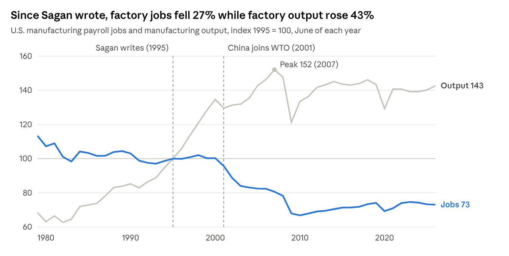
Üretimin artması hikâyeyi karmaşıklaştırıyor ama çürütmüyor. Artışın neredeyse tamamı 2007'den önce gerçekleşti ve önemli bir kısmı daha hızlı bilgisayar çipleri için yapılan kalite düzeltmelerinden kaynaklanıyor. Ticaret de robotlardan daha çok zarar verdi: Tahminlere göre yalnızca Çin'den gelen ithalat rekabeti, 1999'dan 2011'e kadar ABD'de 2,0 ila 2,4 milyon işi yok etti.
Sagan'ın "bir avuç" dediği kesimi saymak bile mümkün. 2025'teki 102 kayda değer yapay zekâ modelinin 93'ünü özel sektör geliştirdi; akademiden yalnızca iki model çıktı. 2025 ortasında en büyük on şirket S&P 500'ün %40'a yakınını oluşturuyordu; 1960'ların ortasından bu yana böylesi görülmemişti. Bu şirketlerin dördü 2026'da, çoğu yapay zekâya gidecek yaklaşık 725 milyar dolarlık yatırım harcaması planlıyor.
Teknoloji devlerini teknoloji baronlarına çeviren şey bir ürün değil, bir mahkeme kararıydı. Citizens United kararı, 2010'dan itibaren şirketlerin ve çok zenginlerin süper PAC'ler aracılığıyla sınırsız harcama yapmasının önünü açtı. Bu gruplar 2022'ye kadar federal seçimlere yaklaşık 6,4 milyar dolar harcadı, yalnızca 2024'te ise rekor bir rakamla 2,7 milyar dolar harcadı. 2022 ara seçimlerinde federal seçimlere akan paranın %15'ini milyarderler sağladı.
Bu paranın neler satın aldığını en iyi Elon Musk gösteriyor. Musk 2024'te Donald Trump'ı ve diğer Cumhuriyetçileri seçtirmek için 290 milyon dolardan fazla harcadı, ardından yönetimin DOGE adlı tasarruf kampanyasının başına geçti. Bu sırada Tesla ile SpaceX'in elinde en az 38 milyar dolarlık federal sözleşme vardı. İkili 2025'te herkesin gözü önünde bozuştu, sonra barıştı: 8 Ekim'de Trump, Musk'a Ulusal Bilim Madalyası'nı verdi. Musk o sırada 2026 ara seçimlerine en az 366 milyon dolar akıtıyordu; başka hiçbir bağışçı bu kadar harcamadı. Bu, lobicilikten çok karşılıklı çıkara dayalı bir flörtü andırıyor.
Sektörün geri kalanı da kapıda giriş ücretini ödedi. Meta, Amazon ve OpenAI'dan Sam Altman, Trump'ın yemin töreni fonuna birer milyon dolar verdi; Microsoft da öyle. Apple, Amazon, Google, Meta, Microsoft, Palantir ve Coinbase, Beyaz Saray'ın yeni balo salonuna bağış yapanlar arasında. Yapay zekâ sektörünün süper PAC'i Leading the Future, ara seçimler için 51 milyon dolar topladı; bunun yarısı Marc Andreessen ile Ben Horowitz'den geldi.
2. Medya kısa kesitlere mi indirgendi?
Evet, ama 1995'te bu zaten olup bitmişti. Harvard'dan Kiku Adatto, büyük kanalların akşam haberlerinde adayların kendi sesinden yayımlanan konuşma kesitlerini ölçtü: 1968'de ortalama 42,3 saniye, 1988'de 9,8 saniye. O günden beri bu süre 8 saniye civarında seyrediyor.
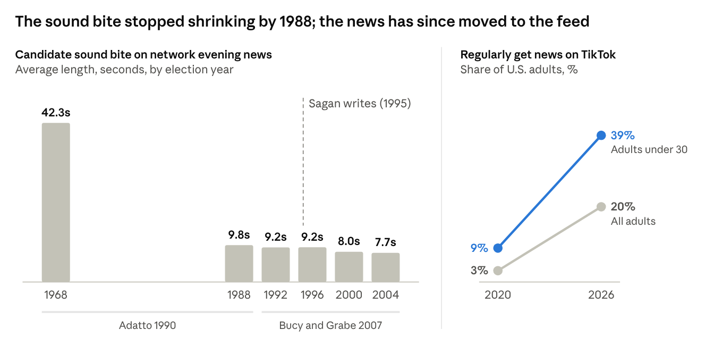
Bunun yerine iki şey değişti. Önce televizyon görüntüyü korudu, argümanı bir kenara bıraktı: Adayların görünüp sesinin duyulmadığı "görüntü kesitleri" 1992 ile 2004 arasında haber başına 22 saniyeden 26 saniyeye çıktı ve konuşma kesitlerini geride bıraktı. Sonra haberler akışa taşındı: ABD'de her beş yetişkinden biri artık düzenli olarak TikTok'tan haber alıyor; 30 yaş altında bu oran onda dörde yaklaşıyor.
3. Batıl inançlara geri mi kayıyoruz?
Büyük ölçüde evet, ama Sagan'ın hayal ettiği biçimde değil. Eski usul batıl inanç yerinde sayıyor: Pew'in 2024 anketinde yetişkinlerin %27'si astrolojiye inandığını söyledi. Bu oran 2017'dekinden istatistiksel olarak farksız; Gallup 1990'da da aşağı yukarı aynı sonucu bulmuştu.
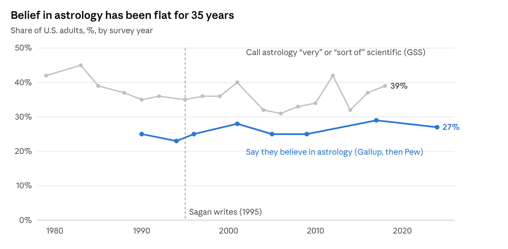
Yeni batıl inanç akıştan geliyor. Yetişkinlerin dörtte biri sağlık bilgisi için en az haftada bir sosyal medyaya başvuruyor. Bu kişilerin MMR (kızamık-kabakulak-kızamıkçık) aşısının otizme yol açtığına inanma ihtimali, sosyal medyaya hiç başvurmayanların iki katından fazla: %37'ye karşı %16. Herhangi bir mite canı gönülden inanan Amerikalı az, ama %31'i neyin doğru olduğundan emin olamadığı bir "kararsız orta"da duruyor. Siyasi haberler de aynı biçimde kümeleniyor: 2020'de ABD'deki 208 milyon Facebook kullanıcısının karşılaştığı haberler ideolojiye göre keskin biçimde ayrışmıştı. Üstelik bu ayrışma, insanların görebileceği içerikten çok etkileşime girdikleri içerikte belirgindi.
Bilime duyulan güven sarsıldı ama yıkılmadı: Bilim insanlarının kamu yararına hareket ettiğine güvenenlerin oranı Nisan 2020'de %87'den 2023'te %73'e düştü, sonra %77'ye toparlandı.
Şüphe biyolojiyle buluşunca hastalığa dönüşüyor. 2025–26 öğretim yılında anaokulu öğrencilerinin rekor düzeyde %4,2'si aşı muafiyeti aldı. İki doz MMR aşılama oranı %95,2'den %92,4'e geriledi ve sürü bağışıklığı için gereken yaklaşık %95'in altına indi. Ülkenin 2000'den beri koruduğu "kızamıktan arınmış" statüsü artık tehlikede.
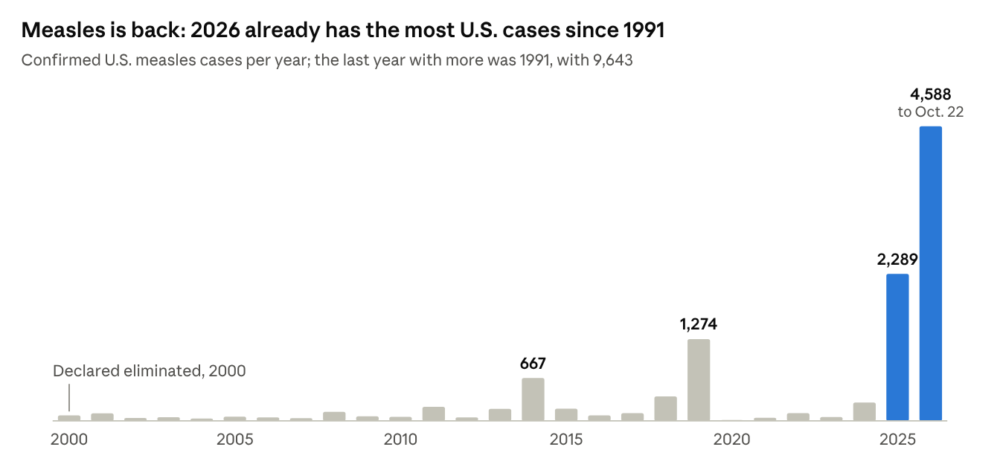
Bunu önleyecek beceri, Sagan'ın en çok önem verdiği beceri. OECD ise 15 yaşındakilerin yarısından fazlasının yanlış bilgiye karşı savunmasız olabileceğini tahmin ediyor. Burçlara inanç yerinde sayıyor; batıl inanç akışa taşındı. Asıl sönmekte olan mum, güvenilir bir iddiayı viral olandan ayırt edebilme yetisi.
4. IQ puanları yükseldi mi, şimdi düşüyor mu?
Yüzyılın büyük bölümünde yükseldi. James Flynn'in gösterdiği gibi ABD'de IQ puanları 1932'den 1978'e kadar her on yılda yaklaşık 3 puan arttı; 285 çalışmayı kapsayan bir meta-analiz de bu artışı doğruladı. Öğretmenliği daha iyi beslenme, daha uzun okul yılları ve soyut düşünceyi ödüllendiren işler yaptı. Çevrenin öğretebildiğini, çevre unutturabilir de.
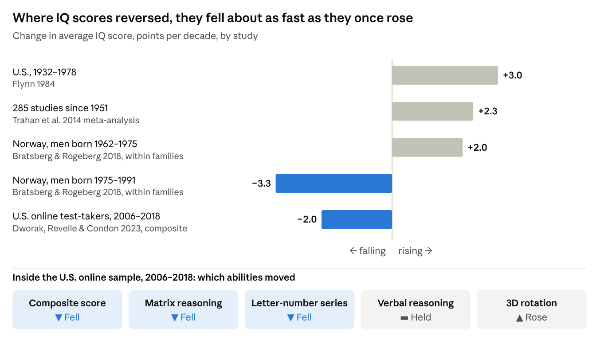
Tersine dönüşün en güçlü kanıtı Norveç'ten geliyor. 1962–1991 arasında doğmuş 736.808 askerlik yükümlüsünün puanları 1975 doğumlularda zirveye ulaştı, ardından her yıl yaklaşık üçte bir puan düştü. Düşüş kardeşler arasında da görüldüğü için kimin çocuk yaptığındaki bir değişimle açıklanamaz; nedeni çevreseldir. Danimarka'da puanlar 1980 doğumlulardan sonra düşüşe geçti.
Amerika'daki kanıtlar daha zayıf. 2006–2018 arasında ücretsiz bir çevrimiçi testi çözen 394.378 yetişkin içinde en sert düşüş 18-22 yaş grubunda görüldü. Katılımcılar teste kendi istekleriyle girdiği için bunu bir hüküm değil, bir uyarı ışığı olarak okumak gerekir: Tersine dönüş İskandinavya'da kanıtlanmış durumda, ABD'de ise akla yatkın.
5. Amerikalı öğrenciler daha az mı öğreniyor?
Evet; kayıplar da en alttakilerden başlıyor. NAEP'in uzun dönemli eğilim çalışması, 1970'lerin başından beri 13 yaşındakileri büyük ölçüde aynı sorularla sınıyor. Kırk yıllık ilerleme 2012'de sona erdi; 2025'e gelindiğinde matematik 1990 düzeyine, okuma ise 1971 düzeyine gerilemişti.
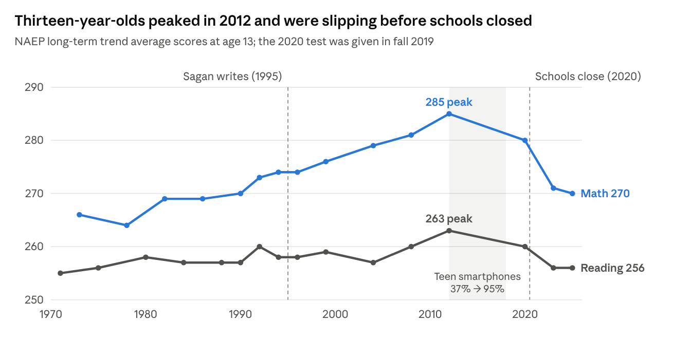
Ortaya çıkan şekil bir kum saati. 2013'ten bu yana en zayıf sekizinci sınıf öğrencileri en güçlülerin yaklaşık altı katı kadar geriledi; okumada bu kaybın yarısı 2020'den önce yaşandı. 2024'te sekizinci sınıf matematik puanlarının genelde yerinde saymasının tek nedeni, başarılı öğrencilerin ilerlemesinin zayıfların gerilemesini dengelemesiydi. On ikinci sınıflar ise bugüne kadar kaydedilmiş en düşük puanları aldı; matematikte %45'i "Temel" düzeyin altında kaldı.
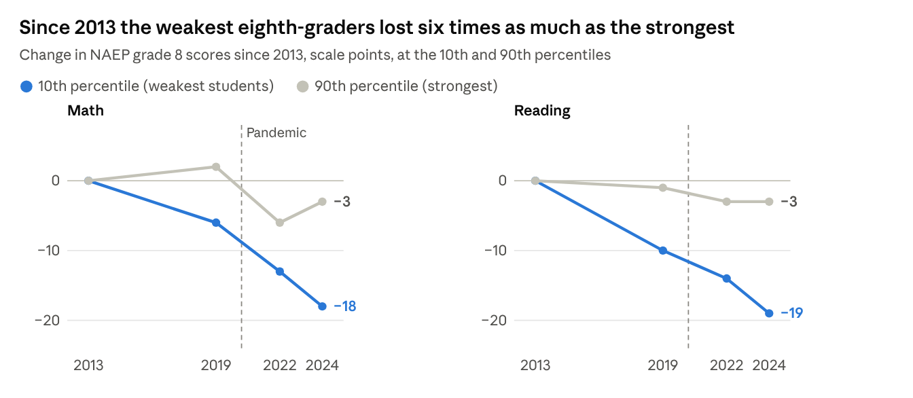
Uluslararası karşılaştırmada ABD, benzer ülkelerden daha yavaş geriliyor. 8 Eylül 2026'da açıklanan PISA 2025 sonuçlarında ABD'li 15 yaşındakiler matematikte ve okumada tüm zamanların en düşük puanlarını aldı. OECD ortalaması daha da sert düştüğü için ABD okumada 13., matematikte 27. sıraya yükseldi.
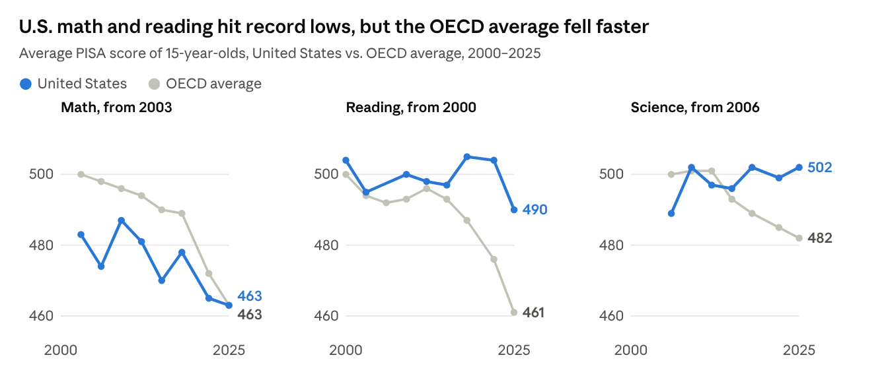
Burada iki noktaya dikkat etmek gerek. 2025 baharında sınavlara ara verildikten sonra ABD'li öğrencilerin %40'tan fazlası arka plan anketini doldurmadı; OECD bu yüzden bir yanlılık ihtimalini dışlayamadı. Ayrıca OECD'nin kendi tahminine göre ABD'li öğrenciler bir öğretim yılında 12 ila 14 puan ilerliyor. Buna göre okumadaki 14 puanlık düşüş, kabaca bir yıllık öğrenmeye denk geliyor.
6. Sorun yalnızca çocuklarda mı?
Hayır. Yetişkinler de geriliyor; demek ki tek sorumlu okullar olamaz. OECD'nin Yetişkin Becerileri Araştırması'nda ABD'nin okuryazarlık puanı 2012'den 2017'ye kadar sabit kaldı, ardından 2023'e kadar 13 puan düştü; sayısal becerilerdeki düşüş 6 puan oldu. Okuryazarlıkta 1. Düzeyde ya da altında kalan, yani ancak kısa ve basit metinlerle başa çıkabilen yetişkinlerin oranı %19'dan %28'e çıktı.
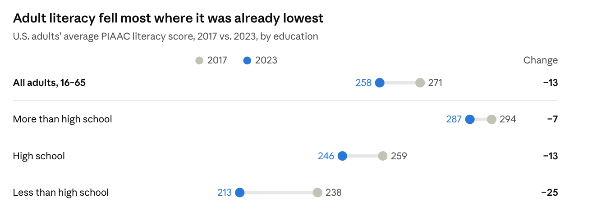
Burada da şekil bir kum saati. NCES komiseri "eriyen bir orta kesimden" söz etti: En altta yığılan daha fazla yetişkin, sayısal becerilerde en tepeye çıkanların artan payı ve becerisi en yüksek olanlarla en düşük olanlar arasında, katılımcı ülkelerin hepsinden geniş bir uçurum. OECD genelinde okuryazarlıkta yalnızca Finlandiya ve Danimarka ilerleme kaydetti. 2023 sınavının formatı değiştiği için düşüşün büyüklüğüne temkinle yaklaşmak gerekir; yönüne değil.
Bu becerileri geliştiren alışkanlık her yaşta zayıflıyor; en hızlı da düşük gelirli, az eğitimli ve kırsalda yaşayan Amerikalılar arasında.
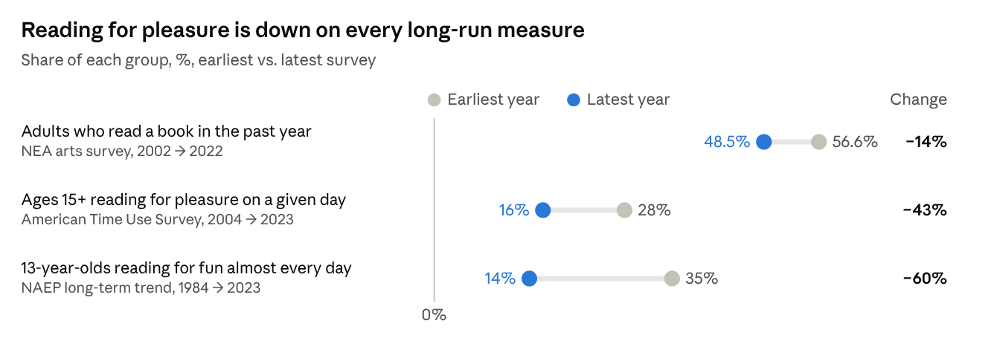
7. Düşüşün arkasında ne var?
Kanıtların hepsine uyan tek bir neden yok. Her açıklamanın üç şeyi hesaba katması gerekiyor: pandemiden önce, 2012 civarında başlayan dönüşü; en zayıflarda yoğunlaşan kayıpları; yetişkinlerde ve zengin ülkelerin genelinde görülen benzer düşüşleri.
| Açıklama | Kanıt | Hüküm |
|---|---|---|
| Akıllı telefonlar ve sosyal medya | Gençlerin akıllı telefona erişimi 2012'de %37'den 2018'de %95'e çıktı; bu, dönüş noktasıyla örtüşüyor. Florida'daki katı telefon yasağı puanları yaklaşık 1 yüzdelik dilim artırdı; zararın nedensel kanıtları ise tartışmalı | Olası bir etken; ölçülen etkiler mütevazı |
| Daha az okuma, daha sık geçiş | Her gün keyif için okuyan Amerikalıların oranı %28'den %16'ya düştü; ekranda başka bir şeye geçmeden önce geçen süre yaklaşık 47 saniyeye indi | Muhtemel mekanizma |
| 2013'ten sonra sınava dayalı hesap verebilirlikten geri adım atılması | Puanlar en hızlı, hesap verebilirlik döneminde yükseldi | ABD'deki okul hikâyesinin bir parçası; yetişkinleri ya da diğer ülkeleri açıklayamaz |
| Pandemi ve kronik devamsızlık | Kronik devamsızlık 2021–22'de yaklaşık %15'ten %28,3'e çıktı, 2024–25'te hâlâ %22,6'ydı | Düşüşü derinleştirdi ama başlatmadı |
| Sınava girenlerin değişen profili | Norveç'teki düşüş aynı ailenin içinde de görülüyor; yetişkinlerdeki düşüş her eğitim düzeyinde var | Ana neden olarak zayıf |
Ortak payda zaman ve dikkat. Sözel ve sayısal becerileri okuma, okula devam ve pratik geliştirir; üçü de 2010'ların başından beri aşınıyor. Sagan'ın medya kaygısı da tam olarak bu; yalnız onu getiren, Sagan'ın hiç görmediği bir mecra.
Sıradaki sınav çoktan başladı. Matematik derslerinde yaklaşık 1.000 lise öğrencisiyle yapılan bir saha deneyinde kısıtlamasız bir sohbet botu alıştırma puanlarını yükseltti, ama bot elden alınınca sınav puanları düştü. Öğrenciyi düşünmeye zorlamak üzere tasarlanmış bir özel ders botu ise bu kayba yol açmadı.
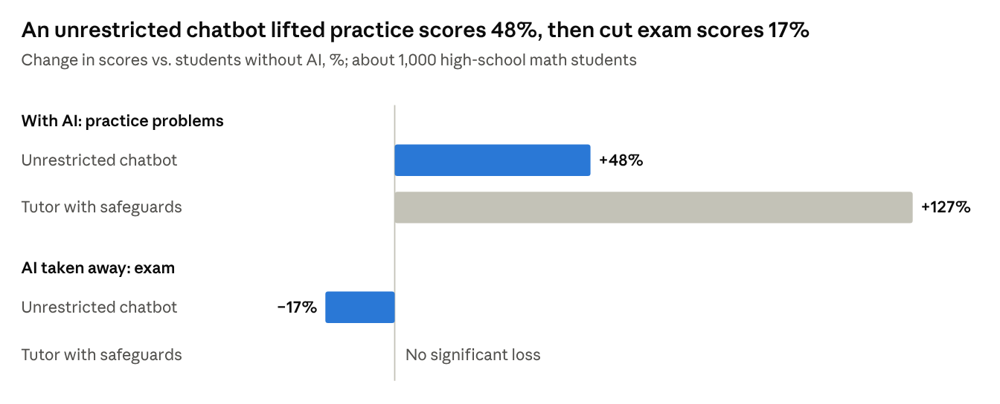
Yapay zekânın sınıflara girip girmemesinden çok, nasıl girdiği önemli olabilir.
8. Sagan abarttı mı?
Kısmen. Sagan'ın kendi ölçütü iyimser hikâyeyi de tartmamızı gerektiriyor ve o hikâye de gerçek.
- Amerikalılar çok daha eğitimli. 25 yaş ve üstü yetişkinler arasında lisans diploması olanların oranı 1995'te %23,0 iken 2024'te yaklaşık %39'a çıktı.
- Bilim okuryazarlığı, Sagan'ın kitabından sonra da onlarca yıl arttı. Bir gazetenin bilim sayfasını takip edebilen yetişkinlerin oranı 1988'de %10'dan 2008'de %28'e çıktı.
- Tepe yerini koruyor, en küçükler toparlanıyor. Başarılı sekizinci sınıflar 2024'te 2013'tekiyle hemen hemen aynı puanı aldı. ABD'nin PISA fen puanı 2006'daki 489'dan 502'ye çıktı; 9 yaşındakiler de 2025'te NAEP'te 3 ila 4 puan geri kazandı.
- Her kuşak bir sonrakinin gerilediğini düşünür. Ön kayıtlı beş çalışmada yetişkinler gençleri en sert, kendilerinin iyi olduğu özelliklerde yargıladı. Richard Hofstadter da 1964'te Anti-intellectualism in American Life ile Pulitzer kazanmıştı.
- Ölçümler gürültülü. Yetişkin araştırmasının formatı değişti, ABD'nin 2025 PISA örnekleminde anket boşluğu var ve ABD'deki temel IQ kanıtı, katılımcıların kendi isteğiyle girdiği çevrimiçi bir örneklemden geliyor.
Yine de iyimser tablo büyük ölçüde 2012 öncesine ve en üsttekilere ait. Diplomalar o tarihten sonra da artmaya devam etti; Amerikalıların çoğu için beceri ölçümleri ise artmadı.
9. Amerika aptallaşıyor mu, ikiye mi bölünüyor?
Bölünüyor. Sagan'ın kitabından sonraki on yedi yıl boyunca Amerikalılar daha eğitimli, çoğu ölçüte göre de daha yetkin oldu. Sonra, 2012 civarında eğri döndü. Ama yavaş ve her yere eşit yayılan bir çürümeye değil, bir kum saatine dönüştü: yerini koruyan ya da ilerleyen becerikli bir tepe, giderek şişen ve geriye düşen bir taban ve incelen bir orta. Zamanlama, kültürel çürümeden çok akıllı telefonların ve akışların gelişiyle örtüşüyor; yine de buradaki hiçbir şey nedenselliği kanıtlamıyor.
Meseleyi siyasi bir soruna çeviren de bu şekil. Eşit yayılan bir gerileme ülkeyi yavaşlatırdı; kum saati ise onu manipülasyona açık kılıyor. Bir cumhuriyet, halk oylamasına sunulan bir teklifi okuyabilen, bir iddiayı tartabilen ve kendisine bir şey satılmaya çalışıldığını fark edebilen geniş bir orta kesimle ayakta durur. Kum saati teknik yetkinliği ve parayı dar tepede topluyor; 2010'dan beri ikisi de orada serbestçe siyasi güce dönüşüyor. Yetişkinlerin en temel düzeyde ya da altında okuyan %28'ini ise bilgilerini etkileşim için ayarlanmış akışlardan edinmeye terk ediyor. Tehlike, zeki insanların ortadan kalkması değil. Tehlike, yetkinlikle gücün aynı yerde toplanması ve onları denetleyebilecek kapasitenin giderek kıtlaşması.
Bunların hiçbiri kader değil. Flynn etkisi, ölçülen becerilerin gündelik hayatın talep ettiklerini izlediğini gösteriyor. Arkasında kanıt olan kaldıraçlar da belli: önce okula devam; en alttaki çeyrek için yoğun birebir destek; deney olarak sınanan telefon kısıtlamaları; uzun metin okumaya ayrılmış korunaklı zaman; cevap makinesi olarak değil, koç olarak tasarlanmış sınıf içi yapay zekâ; Kongre'ye yeniden bir teknoloji ofisi; ve teknoloji servetlerinden seçimlere akan paranın eksiksiz kamuya açıklanması.
Sagan Karanlık Bir Dünyada Bilimin Mum Işığı'nı bir ölüm ilanı olarak değil, bir kılavuz olarak yazdı. Mum sönmedi. Ama ışığı daha az insana ulaşıyor ve karanlıkta kalanları giderek daha fazla, alevi elinde tutanlar yönetiyor.
Ek: Kaynaklar
Ekonomi ve teknoloji
- FRED üzerinden BLS verileri: imalat istihdamı, toplam bordrolu istihdam, hizmet sektörü istihdamı; FRED üzerinden Federal Reserve verileri: imalat üretimi
- Acemoğlu, Autor, Dorn, Hanson ve Price, NBER; Houseman, Upjohn Institute
- Stanford AI Index 2026; S&P Dow Jones Indices; Yahoo Finance, büyük teknoloji şirketlerinin 2026 yatırım harcamaları
- AIP, Senato'nun OTA'yı kapatma oylaması (1995)
Para, güç ve aflar
- Brennan Center, Citizens United seçimleri nasıl değiştirdi
- Musk'ın siyasi harcamaları: 2024, CNN üzerinden; 2026 ara seçimleri, Forbes; PBS üzerinden AP
- Yemin töreni bağışları: NBC üzerinden CNBC; Gulf News; Fortune, Beyaz Saray balo salonunun bağışçıları; Bloomberg Government, Leading the Future
- Aflar: Campaign Legal Center (2026); Forbes (2026); The Block, Zhao'nun affı
Medya ve dikkat
- Adatto, Sound Bite Democracy (1990); Bucy ve Grabe (2007)
- Pew Research Center, TikTok'tan haber alanlar: 2026, 2025
- MarTech, Facebook–Nielsen araştırması; japon balığı efsanesi, BBC ve WSJ; Gloria Mark, University of California
İnanç, bilim ve sağlık
- Pew, astroloji ve tarot (2025); Pew (2009); Gallup (2005); NSF Science & Engineering Indicators, Tablo S7-32
- Pew, bilim insanlarına güven (2026)
- Congressional Research Service, kızamık 2025–2026; USAFacts üzerinden CDC kızamık sayıları; CDC'nin yıllık vaka sayıları, 2000–2024
Yanlış bilgi ve bilgi siloları
- KFF Tracking Poll on Health Information and Trust (Mayıs 2026)
- González-Bailón vd., Science (2023), NYU CSMaP üzerinden
- NAGB, 2024 NAEP sonuçlarından 10 çıkarım
Zekâ ve beceriler
- Flynn (1984); Trahan vd. (2014); Bratsberg ve Rogeberg (2018); Hegelund vd. (2021); Dworak, Revelle ve Condon (2023)
- NAEP: uzun dönemli eğilim, 2025 eki; uzun dönemli eğilim, 2023; 8. sınıf yüzdelik dilimleri; NAGB, 12. sınıf (2024)
- PISA: OECD, PISA 2025 Results; NCES, PISA eğilimleri; Chalkbeat; K-12 Dive
- Yetişkin becerileri: NCES, PIAAC 2023; IES (2024); OECD, Survey of Adult Skills 2023
- Okuma: Bone vd., UCL üzerinden; NEA; Pew, keyif için okuyan çocuklar
Nedenler, yapay zekâ ve karşı görüşler
- Figlio ve Özek, NBER; Odgers (2024); Staiger, WJLA; AEI, kronik devamsızlık; Pew, gençler ve teknoloji: 2013, 2018
- Bastani vd. (2025), PNAS
- Census 1995; Census 2024; Jon Miller, yurttaşların bilim okuryazarlığı; Protzko ve Schooler (2019)
Grafikler
- Sagan kitabını yazdığından beri fabrika istihdamı %27 düştü, fabrika üretimi ise %43 arttı: BLS Current Employment Statistics (MANEMP) ve Federal Reserve sanayi üretimi (IPMAN), FRED üzerinden · haziran değerleri, 1979–2026
- Konuşma kesitleri 1988'de kısalmayı bıraktı; haberler o günden beri akışa taşınıyor: Adatto 1990 (1968, 1988); Bucy & Grabe 2007, Tablo 1 (1992–2004, ABC, CBS, NBC); Pew Research Center anketleri, 2020 ve Ağustos 2026
- Astrolojiye inanç 35 yıldır yerinde sayıyor: Gallup (1990–2005); Pew Research Center (2009, 2017, 2024); NSF Science & Engineering Indicators 2020, Tablo S7-32 (General Social Survey) · Gallup ile Pew'in soru ifadeleri farklı
- Kızamık geri döndü: 2026 şimdiden, ABD'de 1991'den bu yana en çok vakanın görüldüğü yıl: CDC'nin yıllık sayıları, 2000–2024; 2025 ve 2026 (22 Ekim'e kadar) için USAFacts ve Congressional Research Service üzerinden CDC verileri
- IQ puanlarının tersine döndüğü yerlerde düşüş, bir zamanki yükseliş kadar hızlı oldu: Flynn 1984; Trahan vd. 2014; Bratsberg & Rogeberg 2018; Dworak, Revelle & Condon 2023 (standart sapma başına 15 IQ puanıyla yılda −0,013 standart sapma) · testler ve örneklemler farklı; yönleri ve kabaca büyüklükleri karşılaştırın
- 13 yaşındakiler 2012'de zirveyi gördü ve okullar kapanmadan önce bile geriliyordu: NCES, NAEP uzun dönemli eğilim 2025 teknik eki, 13 yaş (2004'ten itibaren revize format); gençlerin akıllı telefon erişimi Pew Research Center'dan (2012 rakamı 12–17 yaşı kapsıyor)
- 2013'ten bu yana en zayıf sekizinci sınıflar, en güçlülerin altı katı kadar geriledi: NAEP Data Service, 8. sınıf, ülke genelinde devlet ve özel okullar, 2013–2024
- ABD'nin matematik ve okuma puanları rekor düzeyde düştü ama OECD ortalaması daha hızlı geriledi: NCES PISA özetleri (2000–2022) ve OECD PISA 2025 Results, Volume I · resmî eğilimler 2003'ten (matematik) ve 2006'dan (fen) başlıyor; 2006'da ABD okuma puanı yok; OECD ortalaması değişen bir ülke grubunu kapsıyor
- Yetişkin okuryazarlığı en çok, zaten en düşük olduğu kesimlerde düştü: NCES, PIAAC 2. Döngü ABD ulusal sonuçları, 16–65 yaş arası yetişkinler; IES basın bülteni, Aralık 2024 · 2023 araştırmasında yeni bir test formatı kullanıldı
- Keyif için okuma, uzun dönemli bütün ölçümlerde düşüşte: NEA sanat katılımı araştırması (2002, 2022); Bone, Bu, Sonke & Fancourt, iScience 2025 (American Time Use Survey); Pew Research Center ve NCES üzerinden NAEP uzun dönemli eğilim · grafikteki “Change”, paydaki göreli düşüşü gösteriyor
- Kısıtlamasız bir sohbet botu alıştırma puanlarını %48 artırdı, ardından sınav puanlarını %17 düşürdü: Bastani vd., PNAS 2025 · lisede matematik dersinde yapılmış bir saha deneyi; özel ders botunun sınav üzerindeki etkisi istatistiksel olarak anlamlı değildi
Yorumlar